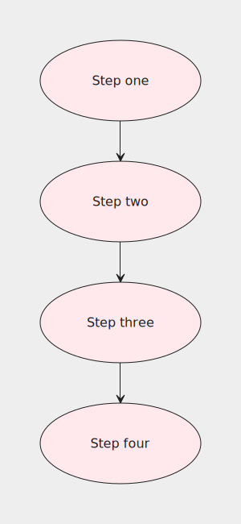

Introduction
What is Flou?
Flou is a domain-specific language (DSL) for describing flowcharts. It is also a CLI of the same name that renders the previously mentioned flowchart description into an SVG file.
Flou's goal is to offer a textual representation of flowcharts.
Reasons to use Flou?
- If you need to generate a flowchart automatically, you can write a program that generates Flou DSL and then use the CLI tool to compile the DSL into an image.
- Textual representation avoids easy-to-miss slight design inconsistencies that might occur when creating a flowchart with a visual design software.
- Flou makes modifying shared flowchart parts straightforward and painless.
- A textual flowchart representation is more suited for version control.
Reasons NOT to use Flou?
- It's still in beta. This means some features might be unpolished.
- Connections that happen to have overlapping segments can bring visual ambiguity since Flou CLI won't render them side by side and will overlap them instead. However, this issue can be offset by the user since they can pick and choose the connection sides.
Installation
You can grab a prebuilt binary from here. Alternatively, if you have Cargo, you can use:
$ cargo install flou_cli
Which will install the flou binary for you to use.
Syntax
This section talks about Flou's syntax. You'll learn:
- How to define flowcharts using
grid. - How to reuse common parts using
define. - All about the basic building blocks of flowcharts: nodes and connections.
Hello World!
Let's create our first flowchart:
grid {
// This is a comment
block(text: "Hello World!", shape: rect);
}

In Flou, all flowcharts are represented with a grid. The basic building blocks of grids are nodes. Our Hello World flowchart has a single node. block is that node's identifier. block is completely arbitrary and can be replaced with anything else. We'll talk more about identifiers and why they're useful later. Other than the identifier, we've included some basic attributes on our node. Also, line-comments can be defined using //.
Shorthands
Since text is the most commonly used attribute, it has a convenient shorthand. We could use the following form and get the same result:
grid {
block("Hello World!", shape: rect);
}
When using the text shorthand, the text string needs to be the first element of the attribute list. For example, this is invalid:
grid {
block(shape: rect, "Hello World!");
}
Rectangle is the default node shape, so we could also omit the shape attribute:
grid {
block("Hello World!");
}
More nodes
A flowchart with a single node isn't that interesting to look at, so let's add some more nodes. Grid rows are separated with a semicolon, while grid columns are separated with a comma. If you want to leave some space intentionally empty like in the third row, use the special _ node.
grid {
block("One"), block("Two");
block("Three");
_, block("Four");
}

Making connections
Absolute connections
Here's a flowchart with two connected nodes:
grid {
block("Source", connect: s:n#dest);
block#dest("Destination");
}
We've attached #dest to the destination node's identifier. This is called a label. Two nodes cannot have the same label. The connection itself is represented with a connect attribute on the source node. The connection declaration above can be split into two parts: s:n and #dest.
s:nmeans that we'd like to connect the south side of the source node to the north side of the destination node.#destis the destination. Here it means that the destination node is the one with the labeldest.
Relative connections
Keeping track of multiple labels is tedious and error-prone. We could simplify the previous example like so:
grid {
block("Source", connect: s:n@s);
block("Destination");
}
Instead of a label on the destination node we used @s as the connection destination, meaning "the node directly south of me". Relative connections are easier to understand and don't require labels, but can't represent all possible connections like absolute ones can.
Self connection
A node can be connected to itself by omitting the direction and using just @, like so:
grid {
block("Source and destination", connect: s:n@);
}

Connection attributes
Certain attributes can be set on connections just like on nodes. Here's an example:
grid {
block("Source", connect: e:w@e("Yes")), block("Destination");
}

Multiple connections
A node may also define multiple connections like so:
grid {
block("Destination 1"), block("Source", connect: { w:e@w("1"); s:n@s("2") });
_, block("Destination 2");
}

Using a define block
Let's take a look at the following flowchart:
grid {
block("Think about going outside", class: "pink", connect: s:n@s);
condition("Is it raining?", shape: diamond, class: "yellow", connect: { s:n@s("No"); e:w#stay("Yes") }), block#stay("Stay inside", class: "pink");
condition("Is it cold?", shape: diamond, class: "yellow", connect: { s:n@s("No"); e:w#stay("Yes") });
condition("Is it night?", shape: diamond, class: "yellow", connect: { s:n@s("No"); e:w#stay("Yes") });
block("Go outside", class: "pink");
}

This flowchart has lots of repetition going on, which means:
- It's harder to read
- If you want to change something, you need to change it in multiple places
- Long lines make it hard to figure out how many columns there are in a row
We can rewrite the example like so:
grid {
block("Think about going outside", connect: s:n@s);
condition("Is it raining?"), block#stay("Stay inside");
condition("Is it cold?");
condition("Is it night?");
block("Go outside");
}
define {
block(class: "pink");
condition(shape: diamond, class: "yellow", connect: {
s:n@s("No");
e:w#stay("Yes");
});
}
Definitions are a mechanism for reusing common attributes. They belong in the optional define block and are separated by semicolons. They are specified in the same way as nodes in grid, with one exception being that labels can't be attached to identifiers inside define. Attributes specified for an identifier in define will apply to all nodes with the same identifier in grid.
Apart from using the define block to put shared attributes in one place, a valid use-case could also be putting a node's long list of attributes in define so as to reduce clutter in grid, making it more readable.
It can also be convenient to put the connect attribute in define if there are multiple connections so that they can be spread across multiple lines for improved readability like in the example above. The same could be done in grid, though it's generally not a good idea since it makes it harder to tell how many rows the grid has.
Overwriting
If a node has the same attribute defined in grid and in define, the value in grid will overwrite the one in define:
grid {
src("Source", connect: e:w@e), dest;
dest("Custom destination", shape: rect);
}
define {
src(shape: square, connect: {s:n@s, e:w@e});
dest("Destination", shape: circle);
}

As an example of where this can come in handy, say we wanted all block nodes connect to the node below them except for the last one. This can be achieved by overriding its connect to an empty list:
grid {
block("Step one");
block("Step two");
block("Step three");
block("Step four", connect: {});
}
define {
block(shape: ellipse, class: "pink", connect: s:n@s);
}

List of attributes
Node attributes
These are the attributes that can be defined on a node:
text— The text to render inside the node.class— One or more CSS classes that will get appended to this node's SVG representation; read more here.shape— Determines the node's shape. Can be one of the following:rect— Rectangle (default).square— Square.ellipse— Ellipse.circle— Circle.diamond— Diamond.angled_square— Square at a 45° angle.
connect— Defines one or more connections this node has to other nodes. Consists of two parts:- Connection sides. Has the format
x:ymeaning "connect the x side of the source node to the y side of the destination node.xandycan be one of the following:n— North.s— South.w— West.e— East.
- Destination. Can be one of the following:
#dest— Connect to the node with the labeldest.@n— Connect to the node directly north of source node. (similar for other cardinal directions).@— Connect source node to itself.
- Connection sides. Has the format
Connection attributes
These are the attributes that can be defined on a connection:
text— The text that appears next to the connection's beginning.class— One or more CSS classes that will get appended to this connection's SVG representation; read more here.arrowheads— Determines which arrowheads the connection will have. Can be one of the following:none— No arrowheads.start— Arrowhead on the source node only.end— Arrowhead on the destination node only (default).both— Arrowheads on both the source and destination nodes.
CLI
Usage:
$ flou [FLAGS] [OPTIONS] <input>
Flags:
-h, --help— Prints help information.-V, --version— Prints version information.--no-default-css— If present, the default CSS file won't be embedded. Read more here.
Options:
--css <css>...— Injects one or more CSS files into the generated SVG. Read more here.-g, --gap <size>— Specifies the size of the grid gaps. Defaults to (50, 50).-n, --node <size>— Specifies the size of nodes in the grid. Defaults to (200, 100).-o, --output <file>— Specifies the output SVG file. Outputs to stdout if no output file is provided.
Args:
<input>— The input file, written in Flou DSL. Use-to read from standard input instead.
Styling your flowchart
SVG output structure
Here's a simple flowchart:
grid {
src("Source");
dest("Destination", class: "my-destination");
}
define {
src(connect: {
s:n@s(class: "my-south-connection", arrowheads: both);
w:w@s(class: "my-west-connection");
});
}
Let's look at the generated SVG:
<svg xmlns="http://www.w3.org/2000/svg" width="300" height="350">
<style>
<!-- Some default CSS here -->
</style>
<rect class="background" x="0" y="0" width="300" height="350" />
<g class="nodes">
<g class="node-wrapper">
<rect class="rect node" x="50" y="50" width="200" height="100" />
<text x="150" y="100">Source</text>
</g>
<g class="node-wrapper my-destination">
<rect class="rect node" x="50" y="200" width="200" height="100" />
<text x="150" y="250">Destination</text>
</g>
</g>
<g class="connections">
<g class="connection my-south-connection">
<path class="path" d="M 150 150 L 150 200" />
<path class="arrowhead start" d="M 150 150 L 145 160 L 150 155 L 155 160 L 150 150" />
<path class="arrowhead end" d="M 150 200 L 155 190 L 150 195 L 145 190 L 150 200" />
</g>
<g class="connection my-west-connection">
<path class="path" d="M 50 100 L 25 100 L 25 250 L 50 250" />
<path class="arrowhead end" d="M 50 250 L 40 245 L 45 250 L 40 255 L 50 250" />
</g>
</g>
</svg>
Various parts of the flowchart are tagged with CSS classes. By default, the flowchart is rendered with some default CSS that targets these classes (that's the <style> element above). The default CSS can be omitted by using the --no-default-css CLI flag. You can see the exact contents of the default CSS file here.
The <rect> with the background class is simply the flowchart's background layer. Other than that, the flowchart consists of two groups: nodes and connections.
Node structure
Each node has the following general shape:
<g class="node-wrapper my-destination">
<rect class="rect node" x="50" y="200" width="200" height="100" />
<text x="150" y="250">Destination</text>
</g>
The element with the node-wrapper class is the node's root. The element with the node class is the shape of the node. This element will also automatically get its shape attached as another CSS class (in this case, rect). Finally, the node's root also contains a <text> element which holds the node's text. Putting a class node attribute like the one on the dest node will attach the given CSS class to the node's root.
Connection structure
Each connection has the following general shape:
<g class="connection my-south-connection">
<path class="path" d="M 150 150 L 150 200" />
<path class="arrowhead start" d="M 150 150 L 145 160 L 150 155 L 155 160 L 150 150" />
<path class="arrowhead end" d="M 150 200 L 155 190 L 150 195 L 145 190 L 150 200" />
</g>
The structure and CSS classes for connections are similar to those of nodes. connection is the connection's root element and path is the shape itself. If the connection has any arrowheads, their elements will have the arrowhead class along with their position as another CSS class. Putting a class connection attribute will attach the class to the connection's root.
Embedding CSS
Let's write a custom CSS file called index.css that will modify the default CSS as well as target the custom CSS classes we attached to our nodes and connections:
/* Override default CSS */
.background {
fill: #cec;
}
/* Custom classes */
.my-destination .node {
fill: lightpink;
}
.my-destination text {
fill: #333;
}
.my-south-connection .path,
.my-south-connection .arrowhead {
fill: blue;
stroke: blue;
}
We can use the --css CLI option to embed one or more CSS files into the resulting SVG:
$ flou input.svg -o output.svg --css index.css
This is the result: